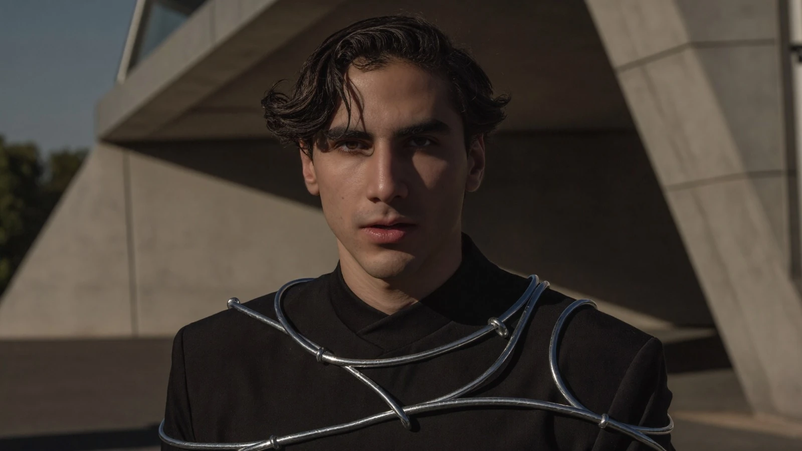
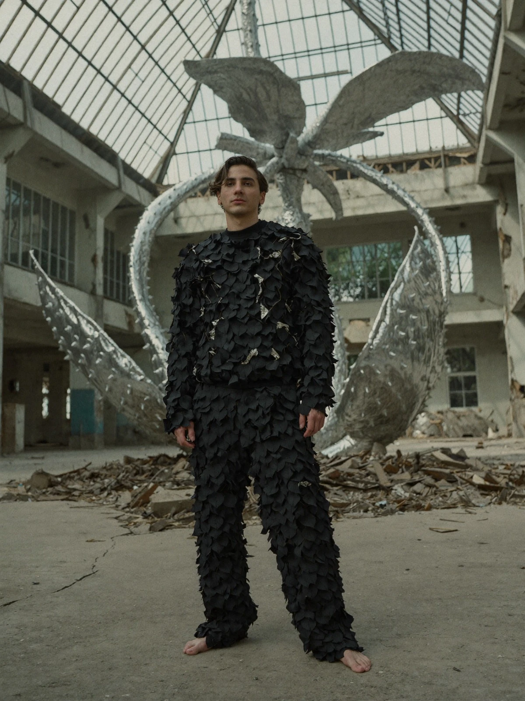

Parallel Vision / Artist
Estero
Andrés Zendejas / Mexico
Techno · Indie dance · Electro

01 / Identity
Between the dancefloor
and introspection.
Estero is the musical project of Andrés Zendejas, a Mexican producer and DJ whose sound moves between techno, indie dance and electro, with a strong inclination towards melodies, powerful basslines and melancholic atmospheres.
His music seeks to create sonic landscapes that evoke emotions and balance the energy of the dancefloor with introspection. Through each composition, Estero strives to tell a story, expressing through sound what words sometimes cannot.
“Every track is a story waiting to be discovered.”EsteroEstero on Siento
On Parallel Vision
02 / Release

Estero / PV016 / 2026
Siento
The nature of feeling in a world that has forgotten how.
Beatport · 6 November
All platforms · 20 November
Fashion After Fabric
03 / Estero in Berlin 2063


A visual collaboration with Parallel Vision, bringing Estero into the material world of Fashion After Fabric.
Enter Fashion After Fabric